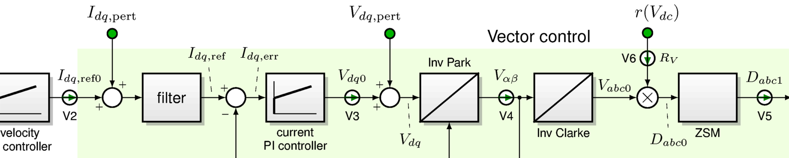
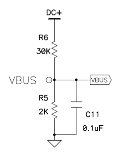

5.1.5. 母线电压补偿¶
母线电压的变化表现为功率电子模块一个随时间变化的增益；如果母线电压升高 10%，那么在向三相桥施加相同占空比的情况下，输出电压也会升高 10%。
这会从几个重要方面影响 FOC 电机控制器的行为：
电流控制器的环路增益随母线电压成正比变化。这种变化会降低电流控制器的稳定性。
母线上的电压暂态会对电流环造成扰动。
仅依赖占空比信号的无传感器估计器也会看到一个与母线电压成正比的增益偏移。
我们可以通过在前向通路中将电压转换为占空比来补偿母线电压，如 图 5.16。
{kind=link}

图 5.16 MCAF 磁场定向控制前向通路框图¶
本质上， \(abc\) 从逆 Clarke 变换模块输出的电压被乘以母线电压的倒数，然后作为零序调制（ZSM）模块的输入：
其中下标 \(abc0\) 表示逆 Clarke 变换未经修改的三相输出，即在 ZSM 模块进行平移和限幅之前的结果。
此外，我们需要让电流控制器的输出限幅与 \(V_{dc}\)成正比地变化，以反映三相桥的物理限制。
5.1.5.1. 暂态过程¶
如果检测 \(V_{dc}\) 的动态比电压暂态本身的动态快得多，那么母线电压补偿在暂态下也能正确工作。
在 dsPICDEM® MCLV‑2 开发板上，例如，有一个 188 μs 的 RC 滤波器（见 图 5.17），它主导了检测的动态行为。其 3 dB 带宽约为 847 Hz，因此母线电压补偿应能抑制频率成分明显低于此值的暂态，而无法抑制处于或高于此频率的暂态成分。一般而言，电机驱动设计应使用时间常数更短的 RC 滤波器，通常在 1–10 μs 量级；由于母线电容已经限制了高频成分，抗混叠问题通常不如避免过大相位滞后重要。

图 5.17 MCLV-2 中的 RC 滤波器¶
5.1.5.2. 实现说明¶
计算 \(R_V = 1/V_{dc}\) 倒数的定点运算依赖于选择合理的比例因子。在 MCAF 中，我们采用 Q12 表示，比例因子为 \(1/V_{dcmax}\)，这使得在电压范围 \(R_V\) 内能够准确计算 \(\frac{V_{dc}}{V_{dcmax}} \in [1/8, 1]\)的倒数。对于 MCLV-2 板最大输入电压范围 52.8 V，这允许在 6.6 V 至 52.8 V 之间进行准确的倒数计算。对于 MCHV-2 和 MCHV-3 板最大输入电压范围 453.3 V，这允许在 56.7 V 至 453.3 V 之间进行准确的倒数计算。
如果 \(V_{dc} < V_{dcmax}/8\) ，倒数被限幅至其最大值（32767 个计数 = \(7.99976/V_{dcmax}\)），此时母线电压补偿将不完美；这种情况下总开环增益（包括硬件中三相桥的增益和软件中的母线电压补偿）将小于 1。
5.1.5.2.1. 功能支持¶
母线电压补偿在 MCAF R1 中不存在，已在 MCAF R2 中加入。